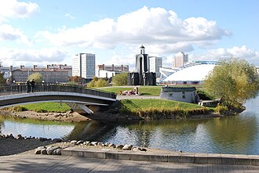
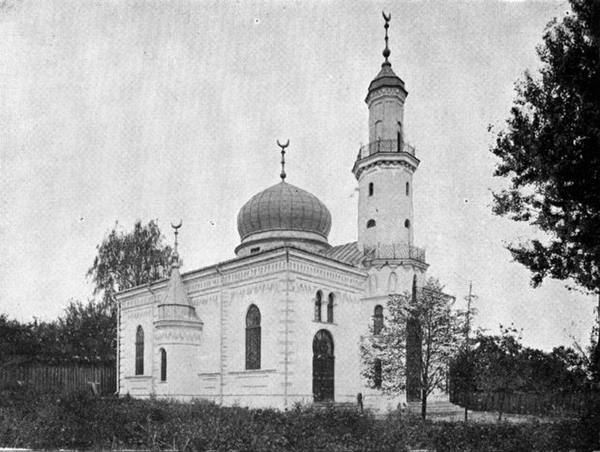
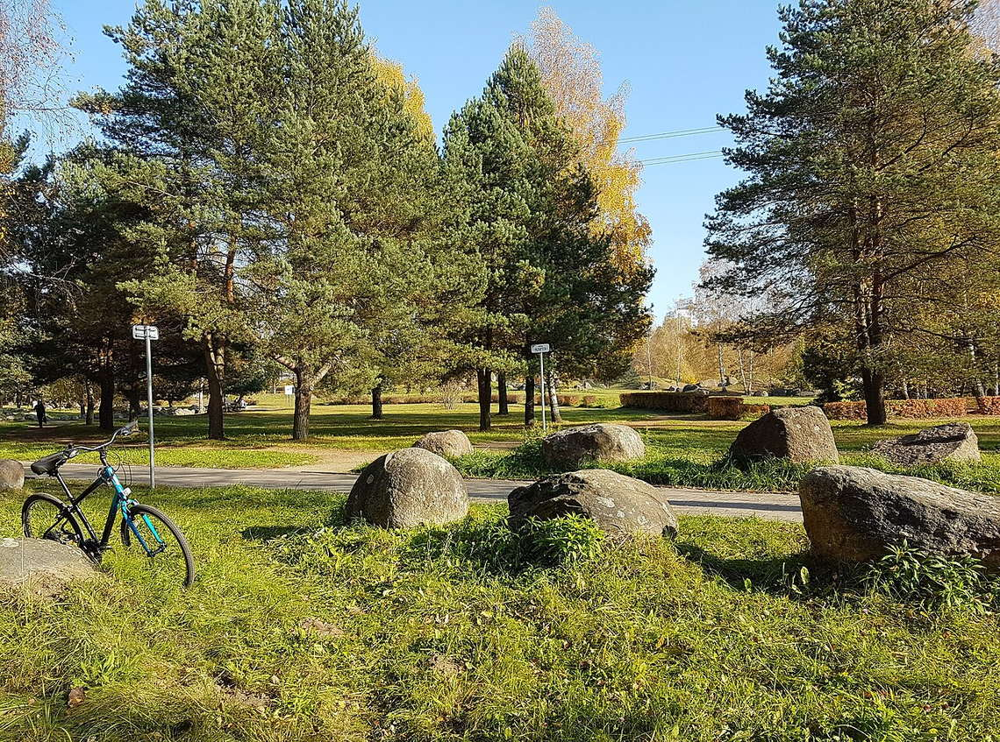
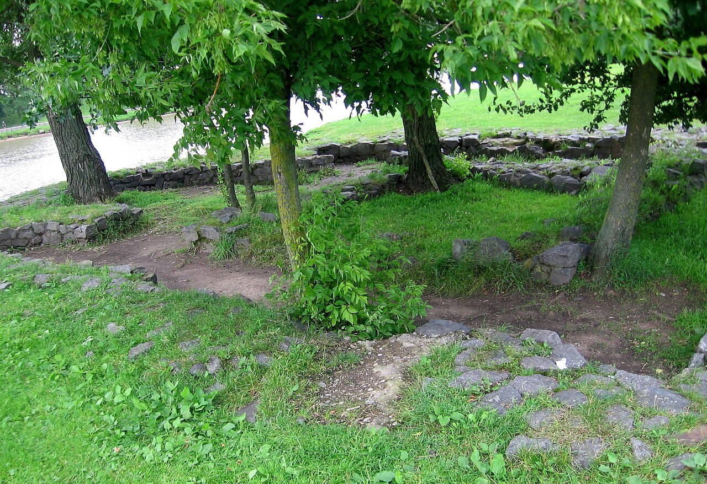

Historical and reference coats of arms


Minsk
Guide. Places in this edition: 35.
OTIUM is the practice of deliberate leisure. In the classical sense, otium is not escape from work but time when attention returns to memory, landscape, and thought — without a utilitarian deadline.
We shape routes for lingering, not for checklist tourism. The goal is presence in a place rather than consumption of sights.
OTIUM is not a tour operator. It is an invitation to walk, pause, and leave a route unfinished if the light on a façade deserves another minute.
Historical and reference coats of arms
Guide. Places in this edition: 35.
Minsk is the capital of Belarus and its largest city on the Svislach River.
Mentioned by the eleventh century, rebuilt after twentieth-century destruction, it is known for broad avenues and green wedges. Industry, technology, and national institutions define its present rhythm.
The world wars and post-war reconstruction produced wide prospekty; independence after 1991 made Minsk the capital of a sovereign Belarus mixing manufacturing, IT, and multinational memory of the borderlands.

The Archcathedral of the Blessed Virgin Mary, located in the heart of Minsk, is a stunning example of Gothic Revival architecture. This prominent Catholic cathedral serves as a spiritual center for the local community and is known for its striking twin spires and beautiful interior. Visitors can admire its intricate stained glass windows and participate in various religious services throughout the week. Founded in 1710 as a Jesuit church. Became a cathedral in 1991 with the establishment of the Diocese of Minsk-Mahilyow. Features Gothic Revival architecture with twin spires.
The Archcathedral was founded in 1710 and has undergone several renovations and restorations since its inception. Originally built as a church for the Jesuits, it became a cathedral in 1991 when the Diocese of Minsk-Mahilyow was established. Key events in its history include the impact of World War II, during which the cathedral suffered damage, and its subsequent restoration in the post-war period. The Archcathedral holds cultural significance as a symbol of the Catholic faith in Belarus, particularly in a predominantly Orthodox country. It serves as a venue for important religious ceremonies and community gatherings, reflecting the traditions and heritage of the local Catholic population. The cathedral also plays a role in the broader cultural landscape of Minsk, attracting both pilgrims and tourists alike.

The Belarusian History Museum in Minsk offers a comprehensive journey through the rich tapestry of Belarusian history, showcasing artifacts and exhibits that span from ancient times to the modern era. Visitors can explore the cultural heritage, significant events, and the evolution of the nation through various interactive displays and collections. The museum serves as a vital educational resource for both locals and tourists alike, highlighting the importance of preserving Belarus's historical narrative. Established in 1957, the museum focuses on Belarusian history and culture. The museum features a wide range of artifacts, including archaeological finds, historical documents, and traditional crafts.
The Belarusian History Museum was established in 1957, with the aim of collecting, preserving, and displaying the historical artifacts of Belarus. It has undergone several renovations and expansions over the years, enhancing its role as a key institution for historical education and research in the country. The museum plays a crucial role in fostering a sense of national identity and pride among Belarusians by highlighting significant cultural and historical milestones. It serves as a platform for understanding the complexities of Belarus's past, including its struggles for independence and the impact of various political regimes. Through its exhibitions, the museum also reflects the cultural diversity and traditions of the Belarusian people.

The Belarusian State Circus in Minsk is a vibrant venue that showcases a variety of performances, including acrobatics, animal acts, and clown shows. With its unique architecture and lively atmosphere, it serves as a popular attraction for both locals and tourists. The circus is known for its commitment to preserving traditional circus arts while also embracing modern performances. Established in 1959. Located in the center of Minsk. Hosts a variety of performances including acrobatics and clown shows.
The Belarusian State Circus was established in 1959, becoming a significant cultural institution in Minsk. It has undergone various renovations and expansions over the years, adapting to the changing tastes of audiences while maintaining its core mission of entertaining and showcasing circus arts. Culturally, the Belarusian State Circus plays a vital role in the artistic landscape of Minsk, contributing to the city's heritage and entertainment scene. It reflects the traditions of circus performance in Belarus, fostering a sense of community and joy among its visitors. The circus also serves as a platform for local talent, helping to promote the arts within the region.

Chelyuskinites Park is a serene green space in Minsk, ideal for leisurely strolls and family outings. With its picturesque landscapes, playgrounds, and recreational areas, it serves as a vibrant hub for both locals and visitors. The park is particularly popular during the warmer months, offering a peaceful retreat from the city's hustle and bustle. Established in 1957. Named after the Chelyuskinites, Soviet explorers. Features playgrounds, walking paths, and recreational areas.
Chelyuskinites Park was established in 1957 and named after the Chelyuskinites, a group of Soviet explorers who undertook significant Arctic expeditions. The park has undergone various renovations over the years, enhancing its appeal and accessibility to the public. Culturally, Chelyuskinites Park plays a vital role in the daily life of Minsk residents, serving as a venue for community events, festivals, and recreational activities. The park's design and layout reflect the Soviet era's emphasis on public spaces that promote social interaction and leisure.

The Church of All Saints in Minsk is a striking example of modern ecclesiastical architecture, notable for its unique design and vibrant stained glass. This church serves as a spiritual center for the local community and is a popular site for both worship and cultural events. Visitors can admire its beautiful interior and participate in various religious activities throughout the year. Consecrated in 2009. Built to honor victims of political repression.
The Church of All Saints was consecrated in 2009, making it one of the newer religious structures in Minsk. It was built to honor the memory of the victims of political repression in Belarus, reflecting the country's complex historical narrative. Culturally, the Church of All Saints plays an important role in the daily lives of many Belarusians, serving as a gathering place for community events and religious ceremonies. It stands as a symbol of resilience and remembrance, contributing to the cultural heritage of Minsk. The church also reflects the broader religious landscape of Belarus, where Orthodox Christianity is predominant.

The Church of Saints Simon and Elena is a prominent Orthodox church located in the heart of Minsk's historic center. Its neoclassical architecture, characterized by clean lines and symmetrical facades, stands out among neighboring buildings. Constructed in the late 1800s, the church underwent significant restoration work following WWII. It features elegant columns and a domed roof typical of neoclassical design. Inside, visitors can admire intricate frescoes depicting scenes from biblical narratives. The church offers regular services and occasional cultural events open to the public. Located near major landmarks such as the National Academic Theatre of Belarus.
Built in the late 19th century, the church was originally dedicated to Saint Elena but later renamed after both saints, Simon and Elena. It served as a place of worship for local residents until it was partially destroyed during World War II. After the war, it was reconstructed and reopened to the community. Visitors come here to appreciate its architectural beauty and historical significance, as well as to experience the tranquility within its peaceful interior.

The Church of Sts Peter and Paul, located in the heart of Minsk, is a striking example of Baroque architecture. This beautiful church serves as a spiritual center for the local community and is renowned for its intricate interior and serene atmosphere, making it a must-visit for both pilgrims and tourists alike. Founded in the early 17th century, completed in 1705. Underwent significant restoration after World War II. Represents Baroque architectural style.
The Church of Sts Peter and Paul was founded in the early 17th century, with its construction completed in 1705. It has undergone several restorations over the years, particularly after suffering damage during World War II. The church has played a significant role in the religious life of Minsk and continues to be a focal point for the Catholic community. Culturally, the Church of Sts Peter and Paul is an important landmark in Minsk, reflecting the city's rich architectural heritage. It is a site of regular worship and community gatherings, contributing to the daily life of its parishioners. The church also symbolizes the historical presence of Catholicism in Belarus, which has shaped the region's cultural landscape.

Drozdy Reservoir is a picturesque spot located on the outskirts of Minsk, offering stunning views and a serene atmosphere. This popular recreational area is ideal for outdoor activities such as walking, cycling, and fishing, making it a favored destination for both locals and visitors. The surrounding nature and tranquil waters provide a perfect escape from the hustle and bustle of the city. The reservoir was built in the 1980s as part of a broader water management strategy. It covers an area of approximately 1.5 square kilometers.
The Drozdy Reservoir was constructed in the late 20th century, primarily for flood control and as a water supply source for the city of Minsk. Over the years, it has evolved into a recreational area, attracting residents and tourists alike to its scenic shores. While primarily a recreational site, Drozdy Reservoir holds cultural significance for the people of Minsk, serving as a gathering place for families and friends. It reflects the city's commitment to preserving green spaces and promoting outdoor activities, contributing to the quality of life in the urban environment.

Gorky Park (Central Children's Park) in Minsk is a large riverside green space with paths, rides, and monuments, popular for walks along the Svislach.

The Great Patriotic War Museum in Minsk is a poignant tribute to Belarus's role in World War II, showcasing a vast collection of artifacts, exhibits, and multimedia presentations. Visitors can explore the museum's extensive galleries that detail the harrowing experiences of the Belarusian people during the war, as well as the broader impact of the conflict on the nation. The museum serves as both an educational resource and a memorial, inviting reflection on the sacrifices made during this tumultuous period. The museum was officially opened on July 3, 2014. It features over 30,000 exhibits related to the Great Patriotic War. The museum is located near the historic Victory Square in Minsk.
The Great Patriotic War Museum was established in 2014, commemorating the significant events of World War II, particularly the Eastern Front's impact on Belarus. The museum's foundation reflects the country's dedication to preserving the memory of those who fought and suffered during the war, with a focus on the Battle of Stalingrad and the liberation of Belarus. Politically, the museum plays a crucial role in shaping national identity and memory regarding World War II, emphasizing Belarus's struggle and resilience. Culturally, it serves as a vital repository of Belarusian heritage, showcasing the art and narratives that emerged from the war experience. The museum also fosters a sense of unity and remembrance among the populace, reinforcing traditions of honoring veterans and those lost during the conflict.

The Holy Spirit Cathedral in the Upper Town is Minsk's principal Belarusian Orthodox church, rebuilt in the 18th century with baroque forms and a landmark white façade.

Independence Square (Niezaležnasci) is the ceremonial centre of Minsk, linking the Red Church, government buildings, and major avenues through the post-war city core.

The Island of Tears is a poignant memorial located in the heart of Minsk, dedicated to the Belarusian soldiers who lost their lives in the Afghan War. Surrounded by the Svislach River, the site features a striking sculpture of grieving mothers and offers a serene space for reflection and remembrance. Visitors can explore the emotional depth of this landmark while enjoying the scenic views of the river and the city. The memorial was inaugurated in 1996. It commemorates Belarusian soldiers who died in the Soviet-Afghan War. The site features a sculpture of grieving mothers, symbolizing loss and remembrance.
The Island of Tears was established in 1996 as a tribute to the Belarusian soldiers who perished during the Soviet-Afghan War from 1979 to 1989. The memorial was designed by architect Andrei Mikhailov and features a unique sculpture created by the artist Alesey Sokolov. The site has since become a significant place for commemorative events and gatherings. Politically, the Island of Tears serves as a reminder of the sacrifices made by Belarusian soldiers during a controversial conflict, reflecting the complexities of national identity and memory in Belarus. Culturally, it has become a site for mourning and remembrance, resonating with the collective grief of families and the nation. The memorial is also a focal point for discussions about war, peace, and the impact of conflict on society.

The Island of Tears is a poignant memorial located in Minsk, dedicated to the Belarusian soldiers who lost their lives in the Soviet-Afghan War. This serene site features a striking sculpture of grieving mothers and serves as a place for reflection and remembrance. Visitors can explore the memorial's artistic elements and the surrounding natural beauty, making it a significant stop for those interested in the country's history and culture. The memorial was inaugurated on June 21, 1996. It features a sculpture of grieving mothers, symbolizing loss and mourning. The site is located on an island in the Svislach River in Minsk.
The Island of Tears was established in 1996 to honor the memory of Belarusian soldiers who died during the Soviet-Afghan War, which lasted from 1979 to 1989. The site features a unique sculpture created by the Belarusian artist Andrei Mikhailov, symbolizing the sorrow of mothers who lost their sons in the conflict. Culturally, the Island of Tears serves as a vital reminder of the human cost of war and the collective grief experienced by families in Belarus. It stands as a symbol of national memory and identity, reflecting the impact of historical events on contemporary society. The memorial is a site of reflection for many Belarusians, emphasizing the importance of remembrance in the nation's cultural heritage.


Located at the heart of Minsk, Minsk Arena is a multi-purpose sports and entertainment venue that has become one of the city's most iconic landmarks. The arena can accommodate up to 14,700 spectators during large-scale events. It features two ice rinks, including one dedicated solely for figure skating competitions. Minsk Arena hosts regular home games for the national ice hockey team. Since its opening, the venue has hosted numerous high-profile international events, attracting top athletes and entertainers. Its unique design includes a retractable roof, showcasing innovative engineering.
Built between 2006 and 2008, Minsk Arena was designed by architect Sergei Kireyev to host major sporting events such as ice hockey matches, concerts, and cultural performances. It quickly gained prominence for its modern architecture and state-of-the-art facilities, making it a hub for both local and international events. Visitors come here to witness world-class performances, whether it's a thrilling hockey game, a concert by popular artists, or a vibrant cultural festival.


Minsk Railway Station serves as a vital transportation hub in the heart of the Belarusian capital, connecting the city to various domestic and international destinations. Its striking architecture and bustling atmosphere reflect the city's vibrant energy, making it a key point of interest for travelers and locals alike. The station is not only a gateway to the city but also a symbol of Minsk's growth and modernization. Inaugurated in 1873, the station has been a key transportation hub for over a century. The station underwent significant reconstruction in the 1950s to accommodate modern rail services.
Minsk Railway Station was inaugurated in 1873, marking a significant development in the city's transportation network. Originally built to facilitate trade and passenger movement, the station has undergone several renovations and expansions over the years, adapting to the increasing demands of rail travel. Key events in its history include its reconstruction in the 1950s and its role during various historical periods, including World War II. The station plays an important role in the daily life of Minsk residents, serving as a central point for commuting and travel. It has witnessed numerous political events, including protests and demonstrations, reflecting the city's dynamic political landscape. Culturally, the station is a meeting point for people from various backgrounds, contributing to the rich tapestry of Belarusian society.

The Minsk Triumph Arch, also known as the Minsk City Gate, is a striking landmark that symbolizes the city's historical and cultural heritage. Erected in the mid-20th century, it serves as a gateway to the capital and a reminder of Belarus's past. Visitors can admire its impressive architecture and the surrounding park, which offers a serene setting for relaxation and reflection. Constructed in 1957 as a tribute to World War II victories. Located at the entrance to the city center, serving as a prominent landmark.
The Minsk Triumph Arch was constructed in 1957 to commemorate the victory of the Soviet Union in World War II. It was designed to celebrate the resilience and strength of the Belarusian people during the war and has since become an iconic feature of the city. The arch holds cultural significance as a symbol of national identity and pride, reflecting the historical narrative of Belarus. It stands as a reminder of the country's tumultuous past and the sacrifices made during the war. The site is often used for public gatherings and ceremonies, reinforcing its role in contemporary civic life.


The National Art Museum in Minsk is a premier destination for art lovers, showcasing an extensive collection of Belarusian and international art. Housed in a striking building, the museum features a diverse array of exhibitions, from classical to contemporary works. Visitors can explore the rich artistic heritage of Belarus and enjoy various cultural events throughout the year. Established in 1939 as the Museum of Fine Arts. Current building completed in 1984. Houses over 30,000 works of art.
The National Art Museum was established in 1939, originally as the Museum of Fine Arts. It has undergone several transformations and expansions, reflecting the evolving art scene in Belarus. The museum's current building, completed in 1984, was designed to accommodate its growing collection and to serve as a cultural hub in the capital. Culturally, the National Art Museum plays a vital role in preserving and promoting Belarusian art and heritage. It serves as a platform for artists and a center for cultural dialogue, contributing to the understanding of Belarusian identity through art. The museum also engages with the public through educational programs and exhibitions, fostering a deeper appreciation for the arts in daily life.

The National Library of Belarus is the largest and most important library in the country, housing over three million books and documents. Established in 1921 as a part of the Belarusian Central Scientific Library, it has since grown into one of Europe's leading research institutions. It houses more than three million items including books, journals, maps, and manuscripts. The building itself is an architectural landmark designed by prominent local architect Ivan Polozkov. The library offers free access to online resources and digital databases for academic research. Regular exhibitions showcase rare editions and artifacts related to Belarusian literature and history. It collaborates with international organizations such as UNESCO to promote knowledge sharing.
Founded in 1921 during the Soviet era, the National Library of Belarus was originally known as the Belarusian Central Scientific Library. Over time, it expanded its collections to include rare manuscripts, historical archives, and modern publications. Today, it serves as a major cultural hub for scholars, researchers, and students. Visitors can explore the extensive collection of historical texts, rare books, and artworks, making it a significant destination for those interested in Belarusian culture and heritage.

The National Opera and Ballet of Belarus, located in the heart of Minsk, is a stunning architectural gem that showcases the rich cultural heritage of the country. With its grand performances and world-class productions, it serves as a vibrant hub for the arts, attracting both locals and tourists alike. Visitors can enjoy a diverse repertoire ranging from classic operas to contemporary ballet, all performed by talented artists. Founded in 1933 as the Belarusian State Opera and Ballet Theatre. The building was completed in 1939 and features a neoclassical architectural style. In 1995, it was awarded the National Academic title.
The National Opera and Ballet of Belarus was founded in 1933, originally as the Belarusian State Opera and Ballet Theatre. The building itself, designed in a neoclassical style, was completed in 1939 and has undergone several renovations since. Key milestones include the establishment of the National Academic title in 1995, recognizing its significance in the cultural landscape of Belarus. The theater plays a crucial role in the cultural life of Minsk, serving as a platform for both traditional and modern artistic expressions. It contributes to the preservation of Belarusian heritage through its performances and educational programs, fostering a love for the arts among the community. While the theater primarily focuses on the arts, it also reflects the broader social and political context of the country, often being a space for cultural dialogue.


October Square is a prominent public space in Minsk, serving as a central hub for both locals and visitors. Surrounded by significant buildings, it is often a venue for cultural events and public gatherings, reflecting the city's vibrant life. The square is particularly known for its striking architecture and the nearby Government House, which adds to its historical and political importance. October Square is located in the heart of Minsk, Belarus. It is bordered by the Government House and the Belarusian State Circus.
October Square was established in the early 20th century and has undergone various transformations throughout its history. Originally named after the October Revolution, it has been a site for numerous significant events, including celebrations and protests, particularly during the late 20th century. The square holds considerable political significance as a site for public demonstrations and gatherings, especially during times of political unrest. Culturally, it is a focal point for community events and celebrations, embodying the spirit of Minsk and its residents. The square's architecture and layout reflect the city's historical evolution and are integral to its urban identity.

October Street is one of the central thoroughfares in Minsk, known for its vibrant atmosphere and historical architecture. Lined with shops, cafes, and cultural venues, it serves as a hub for both locals and visitors. The street is a popular destination for leisurely strolls and offers a glimpse into the city's urban life. The street was named in honor of the October Revolution.
October Street has its roots in the early 20th century, reflecting the architectural styles of that era. It has undergone various transformations, particularly during the Soviet period, when it became a focal point for urban development in Minsk. The street was named to commemorate the October Revolution, symbolizing its historical ties to significant political events. Culturally, October Street plays a vital role in the daily life of Minsk, serving as a gathering place for social activities and events. It is home to several cultural institutions and is often associated with artistic expression, making it a vibrant part of the city's heritage. The street's significance is further underscored by its role in local traditions and celebrations.

The Palace of the Republic on Independence Square is Minsk's main concert and congress hall, used for state events, performances, and large public gatherings.

The Red Church, officially known as the Church of Saints Simon and Helena, is a striking example of neo-Romanesque architecture located in the heart of Minsk. Its vibrant red brick exterior and elegant spires make it one of the city's most recognizable landmarks. The church serves as a popular site for both worship and cultural events, drawing visitors with its unique design and historical significance. Constructed between 1905 and 1910. Designed in neo-Romanesque style. Serves the Roman Catholic community in Minsk.
Construction of the Red Church began in 1905 and was completed in 1910. It was built by the local community as a Roman Catholic place of worship, reflecting the religious needs of the Polish-speaking population in Minsk during that era. The church has witnessed various historical events, including the impact of World War II and the subsequent changes in Belarusian society. The Red Church holds cultural importance as a symbol of the city's architectural heritage and is a testament to the religious diversity in Minsk. It is a gathering place for the local Catholic community and plays a role in various cultural events, enhancing the daily life of residents. While it does not have UNESCO status, it is recognized for its aesthetic and historical value.

St. Elizabeth Convent, located in the heart of Minsk, is a serene oasis known for its stunning architecture and tranquil gardens. Founded in the early 20th century, the convent serves as a spiritual center and a place of refuge, attracting visitors seeking peace and reflection. Its beautiful grounds and vibrant community life make it a unique destination for both pilgrims and tourists alike. Founded in 1910 by Grand Duchess Elizabeth Feodorovna. Serves as a spiritual and charitable center. Features beautiful gardens and traditional Orthodox architecture.
St. Elizabeth Convent was established in 1910 by Grand Duchess Elizabeth Feodorovna, a member of the Russian imperial family. The convent was built as a place for the care of the sick and the poor, reflecting the charitable mission of its founder. Over the years, it has undergone various transformations, particularly during periods of political upheaval, yet it has remained a significant religious institution in Minsk. The convent holds cultural significance as a center of Orthodox Christianity in Belarus, embodying the region's rich religious heritage. It plays a vital role in the daily lives of many locals, offering spiritual guidance and community support. The convent also hosts various religious ceremonies and events, contributing to the preservation of traditions and fostering a sense of unity among believers.

St. Roch Church, located in the heart of Minsk, is a striking example of neo-Gothic architecture. Known for its beautiful stained glass windows and serene atmosphere, it serves as a peaceful retreat for both worshippers and visitors alike. The church is a popular spot for those seeking to experience the spiritual and cultural heritage of the city. Designed in the neo-Gothic style by architect A.
St. Roch Church was constructed in the early 20th century, with its foundation laid in 1905 and the building completed in 1910. It was designed by architect A. V. Kovalchuk and has since undergone various renovations to preserve its architectural integrity and adapt to the needs of the local community. The church holds cultural significance as a testament to the architectural styles of its time and as a site for community gatherings and religious ceremonies. It reflects the rich religious heritage of Minsk and continues to play a role in the daily lives of its residents, providing a space for reflection and worship.

Trinity Hill is a picturesque neighborhood in Minsk, known for its charming cobblestone streets and vibrant atmosphere. This historic area is characterized by its well-preserved architecture and offers visitors a glimpse into the city's past, alongside modern cafes and shops. A stroll through Trinity Hill reveals the rich cultural tapestry of Minsk, making it a must-visit destination for anyone exploring the city. Trinity Hill is one of the oldest neighborhoods in Minsk, established in the 11th century. The area features several historical landmarks, including the Holy Spirit Cathedral and the former merchant houses.
Trinity Hill dates back to the 11th century and is one of the oldest parts of Minsk. It was historically significant as a center of trade and commerce, with its strategic location along the Svislach River. The area has witnessed various key events throughout Belarusian history, including the establishment of the Grand Duchy of Lithuania and later, the Polish-Lithuanian Commonwealth. Culturally, Trinity Hill is a vibrant hub that reflects the heritage of Minsk through its architecture and local traditions. The area is home to several notable landmarks, including the Holy Spirit Cathedral, which showcases the religious and cultural history of the region. Trinity Hill remains an integral part of daily life in Minsk, where locals and tourists alike gather to enjoy its unique blend of history and modernity.

Upper Town Minsk is a historic district that showcases the architectural beauty and cultural heritage of Belarus's capital. Characterized by its charming streets, vibrant atmosphere, and significant landmarks, this area serves as a hub for both locals and visitors. Exploring Upper Town offers a glimpse into the rich history and traditions that define Minsk. Upper Town was a key trading center in the 11th century. The district features notable landmarks such as the Holy Spirit Cathedral and the Town Hall.
Upper Town was established in the 11th century and has played a crucial role in the development of Minsk. It was the center of trade and commerce during the Grand Duchy of Lithuania and later became a focal point during various historical events, including the partitions of Poland and the Soviet era. Culturally, Upper Town is significant for its blend of architectural styles, reflecting the city's diverse history. It is home to several important landmarks, including the Holy Spirit Cathedral and the Town Hall, which are vital to the local heritage. The area also plays a role in contemporary life, hosting festivals and events that celebrate Belarusian traditions.

At the heart of Minsk lies Victory Square, a grand public space that symbolizes both historical significance and modern urban life. Surrounded by majestic buildings and lined with trees, it serves as a gathering place for locals and visitors alike. The square is home to the iconic Palace of Independence, which houses the National Assembly of Belarus. It features impressive monuments honoring the fallen soldiers of WWII. Surrounding streets are lined with elegant Art Nouveau and Classicist buildings dating back to the early 20th century. Events such as concerts, markets, and art exhibitions frequently occur here, making it a dynamic part of the city's social fabric. On major holidays, the square becomes a focal point for national celebrations.
Originally constructed during Soviet times, Victory Square was named to commemorate the victory over Nazi Germany in World War II. It has since evolved into a vibrant hub where cultural events, festivals, and celebrations take place regularly. Visiting Victory Square allows one to experience the fusion of history and contemporary culture in Minsk's bustling center.

Yakub Kolas Square is a central gathering place in Minsk, named after Belarusian poet Yakub Kolas, who played a significant role in the development of modern Belarusian literature. The square features elegant architecture and offers a peaceful atmosphere amidst bustling city life. The square is surrounded by historic buildings dating back to the early 20th century. It hosts regular cultural festivals showcasing traditional Belarusian music and dance. In the center stands a statue honoring Yakub Kolas himself, symbolizing his contribution to Belarusian culture. Nearby are several cafes and restaurants offering local cuisine and drinks. Events such as book fairs and literary readings take place here regularly.
Named after renowned Belarusian writer Yakub Kolas, whose works greatly influenced the cultural identity of Belarus, the square was developed during the Soviet era as a focal point for civic gatherings and celebrations. It has been a hub for political rallies, concerts, and commemorative events since its inception. Visitors come to Yakub Kolas Square to experience the tranquility of the city center, enjoy performances by local artists, and appreciate the architectural beauty of the surrounding buildings.
